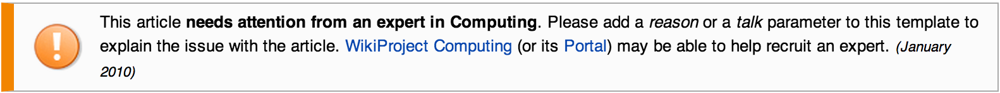

Dependency Injection
“It's terrible to have to depend on someone else.”
— Jeff Lindsay, Dearly Devoted Dexter
“I'll talk for a while and hope sufficiently to provoke and inflame opinion that there'll be an outburst of chair-throwing at the end.”
— Douglas Adams
DISCLAIMER
What GoF have to say about this
Design Patterns: Elements of Reusable Object-Oriented Software - 1994

Wikipedia
“Dependency injection is a software design pattern that allows the removal of hard-coded dependencies and makes it possible to change them, whether at run-time or compile-time.”

Services
“Put simply, a Service is any PHP object that performs some sort of "global" task. It's a purposefully-generic name used in computer science to describe an object that's created for a specific purpose (e.g. delivering emails).”
— Symphony Framework on DI

Scope creep
- Staging - send to tester instead
- Production - must use SMTP
“Easy, I'll just add more if / else in the controller.”
- Open source?
“Everything should be made as simple as possible, but not simpler.” - Albert Einstein
Yeah, okey..
Lets get crazy
In object-oriented computer programming, a factory is an object for creating other objects.
… or let's have a cup of java.
Thank you!
You are now free to start hurling the chairs around!
Resources
- SilverStripe documentation on Injector
- Code examples with tests
- Injector API
- Next step: dev mailing list
github/stojg/slides.stojg.se | http://slides.stojg.se | @stojg